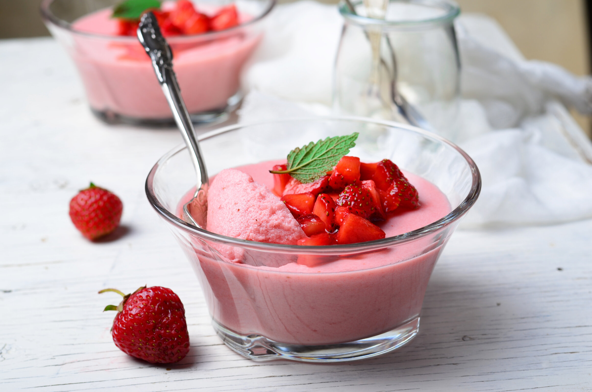

Receita mousse de morango
A mousse de morango é uma sobremesa clássica e irresistível! Prepare-se para se deliciar com essa combinação irresistível de sabores em uma mousse de morango simples e deliciosa que certamente agradará a todos os paladares!

Ingredientes (15 porções)
- leite condensado
- 1 lata de leite condensado
- creme de leite
- 1 lata de creme de leite
- gelatina de morango
- 2 caixinhas de gelatina sabor morango
- água
- 250 ml de água
Tempo de preparo: 10min
Modo de preparo
- Esquente a água.
- Dissolva os pacotes de gelatina na água quente e bata no liquidificador.
- Acrescente o leite condensado e o creme de leite.
- Bata até ficar espumoso.
- Despeje em uma tigela ou se preferir em tacinhas.
- Deixe gelar por 2 ou 3 horas ou até ficar bem consistente.
- Se quiser depois de firme decore a mousse com morangos.